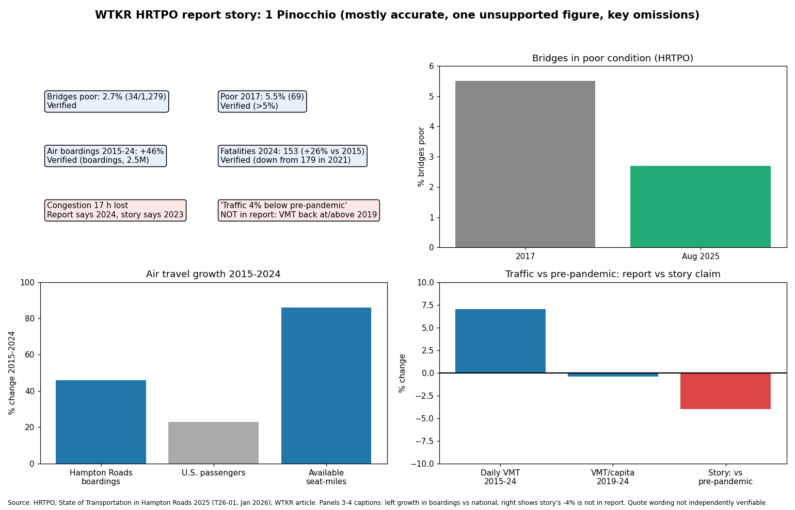

Fact-check: WTKR HRTPO transportation story

Mostly accurate: 1 Pinocchio
Most figures match HRTPO's State of Transportation in Hampton Roads 2025 (Jan 2026). One figure is unsupported and several items mislead.
- Verified: 2.7% poor bridges (34 of 1,279, Aug 2025) vs 5.5% (69) in 2017; air boardings +46% 2015-2024 (2.5M in 2024); fatalities up 26% over the decade, down from the 2021 peak of 179 to 153; international arrivals facility under construction.
- Wrong: 17 hours lost to congestion is TomTom 2024, not 2023.
- Unsupported: "traffic about 4% below pre-pandemic" - report says VMT has returned to/exceeded 2019 (per capita -0.4%); travel time index remains below pre-pandemic. Quote could not be verified.
- Misleading: third Norfolk Amtrak train will be replaced by a bus during Long Bridge construction (to ~2030); Cancun flight starts Jan 2026; "2026 surge" rests on 2024 data; 46% counts boardings.
- Not checkable: Nichols's exact words and causal attributions (funding, prioritization).
Sources
Confidence: high for report-matched figures; no second independent source checked.